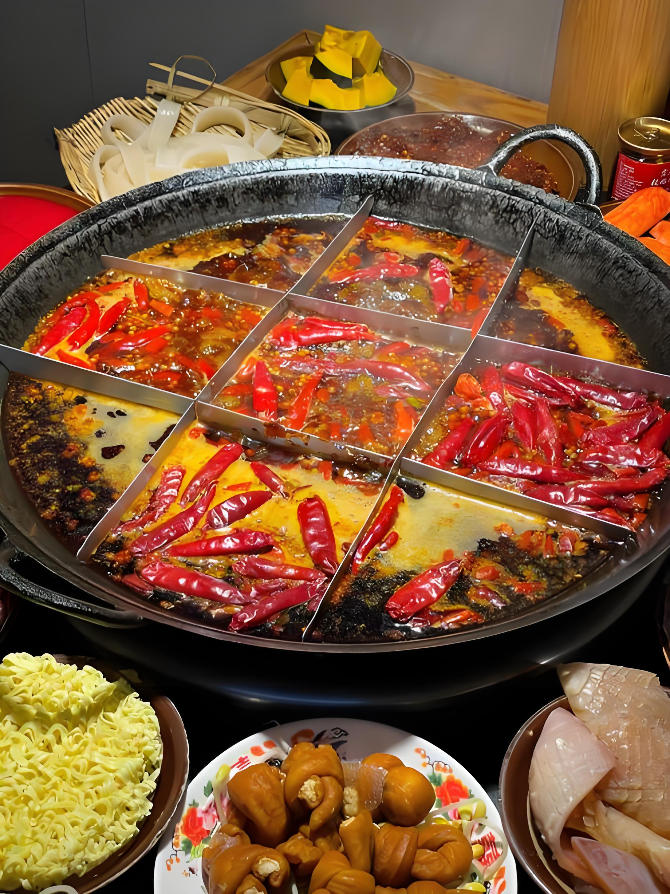
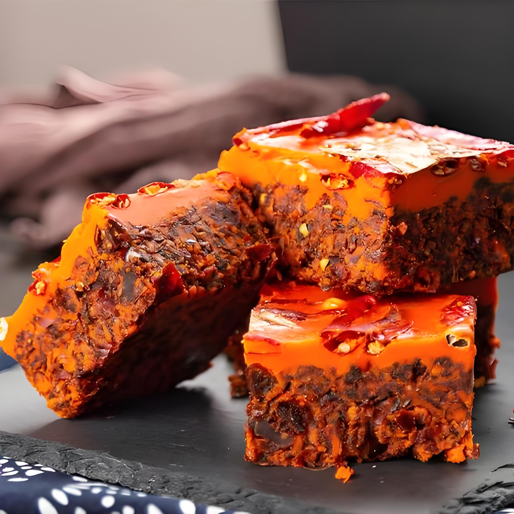
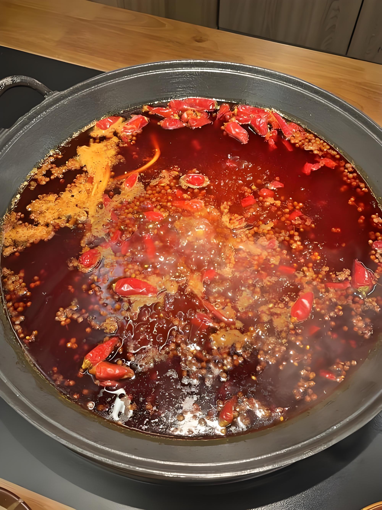

CHONGQING HOTPOT
Born in the Yangtze River docks during the late Ming Dynasty, Chongqing hotpot has evolved into a culinary phenomenon that defines this city's identity. Unlike other regional hotpot styles, authentic Chongqing hotpot features the legendary mao Claudius broth, a fiery red soup that coats the mouth with heat and numbing sensation.
The secret lies in the unique combination of dried chilies, Sichuan peppercorns, and a medley of aromatic spices. Locals say a proper Chongqing hotpot should make your lips tingle and your forehead sweat. The broth bubbles in a distinctive split pot, with one side extra spicy for the brave.
Dining is a communal affair. Friends and family gather around the table, selecting from an array of ingredients: thinly sliced beef, pork belly, liver, kidney slices, blood tofu, lotus root, potato slices, and various bean products. Each item takes seconds to cook and is dipped in a sesame oil bowl with minced garlic.


